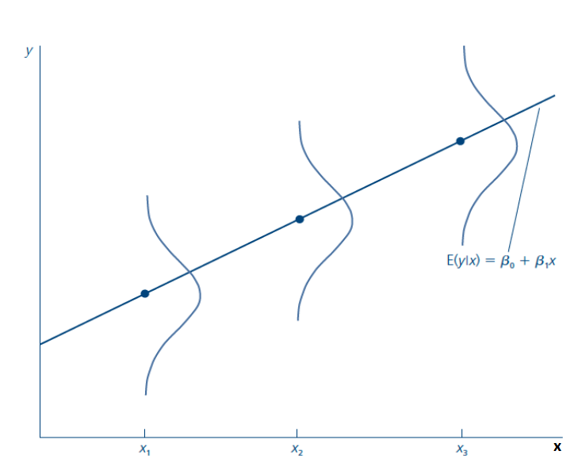

Clase 2 · Regresión lineal simple
🎯 Objetivos de la sesión
- Plantear el modelo de regresión lineal simple (RLS) e interpretar sus parámetros.
- Entender el supuesto clave \(E[u \mid x] = 0\) y la función de regresión poblacional.
- Derivar e interpretar los estimadores de Mínimos Cuadrados Ordinarios (MCO).
- Descomponer la variabilidad de \(y\) (\(SST = SSE + SSR\)) y medir la bondad de ajuste con el \(R^2\).
- Conocer los supuestos RLS.1–RLS.5 y las propiedades de insesgamiento y varianza de MCO.
🗓️ Agenda
| Hora | Bloque |
|---|---|
| 18:40 – 18:55 | Repaso y motivación: la esperanza condicional |
| 18:55 – 19:25 | El modelo de regresión lineal simple y el supuesto \(E[u\mid x]=0\) |
| 19:25 – 19:55 | Mínimos Cuadrados Ordinarios — simulador: encuentra la recta |
| 19:55 – 20:05 | Receso |
| 20:05 – 20:25 | Propiedades algebraicas de MCO y método de momentos |
| 20:25 – 20:50 | Descomposición de la varianza y \(R^2\) — cambio de unidades |
| 20:50 – 21:15 | Supuestos RLS, insesgamiento y varianza de los estimadores |
| 21:15 – 21:25 | Cierre y tarea |
1. La esperanza condicional
La función de esperanza condicional (FEC) es el valor esperado (la media poblacional) de \(Y\) cuando \(X\) está fijo en un valor dado.
| Individuo | Años de educación | Ingreso |
|---|---|---|
| María | 5 | 120 |
| Juan | 5 | 100 |
| Pedro | 4 | 80 |
| Catalina | 2 | 50 |
La regresión es, en esencia, una forma de aproximar la esperanza condicional con una recta.
2. El modelo de regresión lineal simple
Queremos estudiar la relación entre dos variables \(x\) e \(y\) en la población: explicar \(y\) en términos de \(x\), o cómo cambia \(y\) cuando cambia \(x\).
| Término | Nombres |
|---|---|
| \(y\) | variable dependiente, explicada, de respuesta, predicha o regresando |
| \(x\) | variable independiente, explicativa, de control, predictora o regresor |
| \(\beta_1\) | pendiente: cómo cambia \(y\) cuando cambia \(x\), con los demás factores (en \(u\)) constantes |
| \(\beta_0\) | intercepto o término constante; permite suponer \(E(u)=0\) |
| \(u\) | término de error o perturbación: todos los factores distintos de \(x\) que afectan a \(y\) ("unobserved") |
Ejemplo: \(\text{salario} = \beta_0 + \beta_1\,\text{educación} + u\). Si los demás factores se mantienen constantes (\(\Delta u = 0\)), entonces \(\Delta\text{salario} = \beta_1\,\Delta\text{educación}\).
Pero… ¿los factores no observados son realmente constantes?
¿Qué hay en \(u\) en la ecuación de salarios? Habilidad, experiencia, motivación, contactos, educación de los padres… ¿Se relacionan con los años de educación?
El supuesto clave: media condicional cero
Como no observamos \(u\), es difícil afirmar que se mantiene constante. Para estimar el efecto ceteris paribus \(\beta_1\) necesitamos:
El valor promedio de los factores no observables es el mismo para cualquier valor de \(x\) (y es cero): \(u\) es media-independiente de \(x\). Esto implica que \(x\) no está correlacionada con los factores no observables.
Función de regresión poblacional (FRP)
Si se cumplen linealidad y \(E[u\mid x]=0\):

Interpretación:
- \(\beta_1 = \dfrac{\Delta E[y\mid x]}{\Delta x}\): cuando \(x\) aumenta en una unidad, el valor esperado de \(y\) cambia en \(\beta_1\) unidades.
- \(\beta_0 = E[y \mid x = 0]\): el valor medio de \(y\) cuando \(x\) es cero.
3. Estimación por Mínimos Cuadrados Ordinarios (MCO)
Con una muestra \(\{(x_i, y_i): i = 1,\dots,n\}\) escribimos \(y_i = \beta_0 + \beta_1 x_i + u_i\). Para cada observación definimos:
- \(\hat{y}_i = \hat{\beta}_0 + \hat{\beta}_1 x_i\): valor ajustado o predicho.
- \(\hat{u}_i = y_i - \hat{y}_i\): residuo, el análogo muestral del error.
MCO elige los \(\hat{\beta}\) que minimizan la suma de los residuos al cuadrado:
Condiciones de primer orden:
Todo lo que aparece en estas fórmulas está en los datos, así que podemos calcular los estimadores.
La función de regresión muestral (FRM) \(\hat{y} = \hat{\beta}_0 + \hat{\beta}_1 x\) es la versión estimada de la FRP, que en general es desconocida.

Ejemplo: educación y salarios en EE. UU.
Regresando el salario por hora (dólares) en años de educación, se obtiene una pendiente de aproximadamente \(\hat{\beta}_1 = 0.54\): cada año adicional de educación se asocia, en promedio, con 54 centavos más por hora. ¿Es este un efecto causal? Lo discutiremos en la Clase 3.
Método de momentos
Llegamos a los mismos estimadores partiendo de los supuestos poblacionales \(E(u)=0\) y \(E(xu)=0\):
y eligiendo \(\hat{\beta}_0, \hat{\beta}_1\) que resuelvan sus contrapartes muestrales — que son exactamente las condiciones de primer orden de MCO.
Propiedades algebraicas de MCO
- Los residuos suman cero: \(\sum_i \hat{u}_i = 0 \;\Rightarrow\; \bar{\hat{u}} = 0\).
- \(x\) es ortogonal a los residuos: \(\sum_i x_i \hat{u}_i = 0\).
- El promedio de los valores ajustados es igual al de \(y\): \(\bar{\hat{y}} = \bar{y}\).
- La recta de regresión pasa por el punto de promedios: \(\bar{y} = \hat{\beta}_0 + \hat{\beta}_1 \bar{x}\).
Compruébalas en el simulador de arriba activando "Mostrar recta MCO".
4. Descomposición de la varianza y bondad de ajuste
A partir de esta relación se define el coeficiente de determinación:
Es la proporción de la variación muestral de \(y\) explicada por \(x\). Cuanto más cerca de 1, más variabilidad de \(y\) explica el modelo.
Un \(R^2\) bajo no invalida la regresión
En ciencias sociales es común obtener \(R^2\) bajos: muchos factores afectan a \(y\). Un \(R^2\) bajo no significa que \(\hat{\beta}_1\) esté mal estimado, y un \(R^2\) alto no garantiza un efecto causal.
Cambio de unidades de medición
- Si \(y\) se multiplica por una constante \(c\), ambos coeficientes se multiplican por \(c\).
- Si \(x\) se multiplica (divide) por \(c\), la pendiente se divide (multiplica) por \(c\); el intercepto no cambia.
- La bondad de ajuste no depende de las unidades de medición.
5. Supuestos del modelo RLS y propiedades de MCO
| Supuesto | Enunciado |
|---|---|
| RLS.1 — Linealidad en los parámetros | En la población, \(y = \beta_0 + \beta_1 x + u\). |
| RLS.2 — Muestreo aleatorio | Contamos con una muestra aleatoria \(\{(x_i, y_i): i=1,\dots,n\}\). |
| RLS.3 — Variación muestral en \(x\) | No todos los \(x_i\) tienen el mismo valor. |
| RLS.4 — Media condicional cero | \(E(u \mid x) = 0\). |
| RLS.5 — Homocedasticidad | \(\text{Var}(u \mid x) = \sigma^2\): la varianza del error no depende de \(x\). |
Insesgamiento (RLS.1–RLS.4):
El insesgamiento es una propiedad de la distribución muestral de los estimadores: no dice nada sobre la estimación obtenida con una muestra en particular, sino que, en promedio sobre muchas muestras, acertamos.
Varianza de los estimadores (RLS.1–RLS.5):
Cuando falla RLS.4: correlación espuria
Si \(u\) contiene factores que afectan a \(y\) y están correlacionados con \(x\), MCO encuentra una relación entre \(x\) e \(y\) que en realidad se debe a esos factores no observados. Ese es el tema de la próxima clase.
✅ Autoevaluación
Estimas salario = −0.90 + 0.54·educ. ¿Cuál es la interpretación correcta de 0.54?
✅ β̂₁ describe cómo cambia el salario esperado. Solo es causal si E[u|educ] = 0, lo que es dudoso (habilidad). La tercera opción describe un R², no una pendiente.
En una regresión, SST = 400 y SSR = 300. ¿Cuánto vale el R²?
✅ R² = 1 − SSR/SST = 1 − 300/400 = 0.25. (Y SSE = SST − SSR = 100.)
¿Cuál de estos cambios no reduce la varianza de β̂₁?
✅ Cambiar las unidades de y multiplica β̂₁ y su desviación estándar por la misma constante: la precisión relativa no cambia. Más n y más SSTₓ sí reducen Var(β̂₁) = σ²/SSTₓ.
📝 Tarea
Muestre que:
Pista
Desarrolla el producto y usa que \(\sum_{i=1}^n (x_i - \bar{x}) = 0\).
📚 Para la próxima clase
- Wooldridge, capítulo 2 (El modelo de regresión simple).
- Próxima clase: Causalidad y variable omitida — ¿cuándo podemos interpretar \(\hat{\beta}_1\) como un efecto causal?